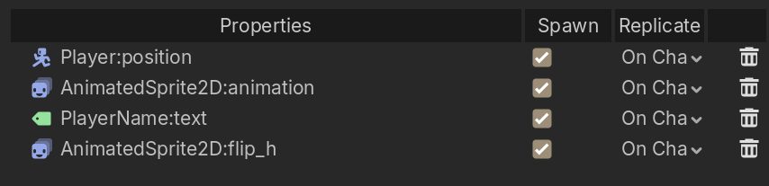
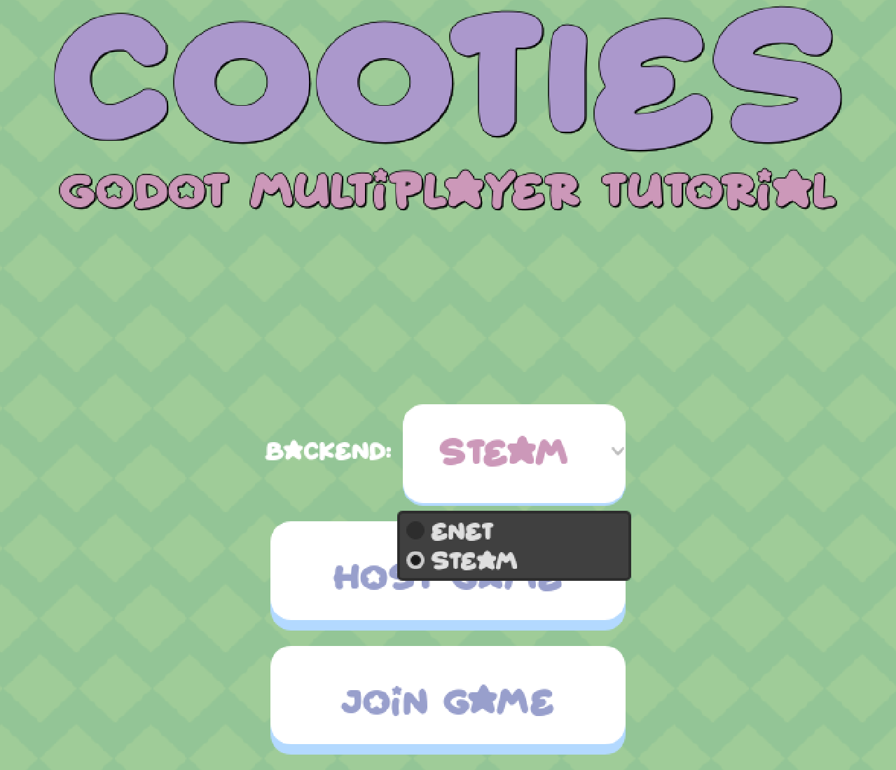

Hi, I'm Mark and today we'll be making this. A multiplayer infection / tag based platformer where you avoid the players who are sick with Cooties.
In this video, we'll be covering:
Whether you've never touched multiplayer or looking to understand networking better, this tutorial is meant to you a solid foundation to start from. But first, a word from our sponsor.
There is no sponsor! Go play my game SurfsUp on Steam!
Hide a Steam key during the segment out of order to let people get the DLC for free.
In Cooties, we use a peer-to-peer client-server architecture.
This means:
Server authority prevents cheating and ensures consistency.
In our game Cooties, the server:
Clients only:

Here's how we enforce server authority in our game:
res://Scenes/Game/game.gd:27
func _ready() -> void:
add_to_group("game")
# Only server manages game logic
if not multiplayer.is_server():
return
Steam.setLobbyJoinable(SteamInit.lobby_id, false)
_setup_timers()
multiplayer.peer_disconnected.connect(_on_peer_disconnected)
await get_tree().create_timer(0.5).timeout
_start_round()Notice the early return for clients - they skip all the game logic initialization!
[VISUAL: Three-column layout showing the components]
Every multiplayer game in Godot needs:
We'll explore each of these in detail throughout this tutorial.
[VISUAL: Split screen comparing ENET and Steam logos]
A MultiplayerPeer is Godot's abstraction for network communication.
It handles:
Godot 4 supports multiple backends, but the two most common are ENET and Steam. But there's also the Nakama Bridge and the Epic Online Services peers

On Cooties' main menu we give the player the choice between selecting the ENET or Steam multiplayer peer with unique UI for both.
ENET is a lightweight, open-source networking library.
It's perfect for:
Creating an ENET Server:
Scenes/Games/game.gd:126
func _on_host_game_pressed() -> void:
match backend.selected:
MultiplayerBackend.ENET:
print("Creating ENET Server")
var peer: ENetMultiplayerPeer = ENetMultiplayerPeer.new()
var error: Error = peer.create_server(7777, 4)
if error:
print("Server Error: %s" % error)
else:
multiplayer.multiplayer_peer = peer
Global.add_local_player()
Global.change_level("res://Scenes/Lobby/lobby.tscn")Key points:
create_server(7777, 4) - Port 7777, maximum 4 playersmultiplayer.multiplayer_peer = peer - Tells Godot to use this peerCreating an ENET Client:
func _on_connect_pressed() -> void:
var peer: ENetMultiplayerPeer = ENetMultiplayerPeer.new()
var error: Error = peer.create_client(ip_address.text, 7777)
if error:
print("Client Error: %s" % error)
else:
Global.ip_address = ip_address.text
multiplayer.multiplayer_peer = peer
# Wait for player data to sync from server
await Global.players_synced
Global.change_level("res://Scenes/Lobby/lobby.tscn")Notice:
await for player data to sync before changing scenesSteam networking is more robust and feature-rich. Benefits include:
Initializing Steam:
extends Node
var steam_running: bool = true
var lobby_id: int = 0
var peer: SteamMultiplayerPeer = SteamMultiplayerPeer.new()
var steam_name: String
func _ready() -> void:
process_mode = Node.PROCESS_MODE_ALWAYS
var init_steam: Dictionary = Steam.steamInitEx(480)
print("Steam Init: %s" % init_steam)
if init_steam['status'] > Steam.STEAM_API_INIT_RESULT_OK:
steam_running = false
else:
steam_name = Steam.getPersonaName()
func _process(_delta: float) -> void:
Steam.run_callbacks()Critical: You must call Steam.run_callbacks() every frame!
Creating a Steam Lobby:
func _on_lobby_created(connected: int, lobby_id: int) -> void:
if connected == 1:
print("Created lobby %s" % lobby_id)
SteamInit.lobby_id = lobby_id
SteamInit.peer.host_with_lobby(lobby_id)
multiplayer.multiplayer_peer = SteamInit.peer
Steam.setLobbyJoinable(lobby_id, true)
Steam.setLobbyData(lobby_id, "name", Steam.getPersonaName() + "'s lobby")
Steam.setLobbyData(lobby_id, "game", "GodotCootiesMPTutorial")
var set_relay: bool = Steam.allowP2PPacketRelay(true)
print("Allowing Steam to relay backup: %s" % set_relay)
Global.add_local_player()Key differences from ENET:
host_with_lobby() instead of create_server()Feature | ENET | Steam |
Complexity | Simple | Moderate |
NAT Traversal | Manual (port forwarding) | Automatic |
Matchmaking | Manual (IP sharing) | Built-in lobbies |
Relay Servers | None | Free Steam relays |
Platform | Cross-platform | Requires Steam |
Best For | Prototypes, LAN, dedicated servers | Released games, casual matchmaking |
Pro tip: ENET is simple and quick but requires an open port, while Steam can handle lobbies for match making and handle routing!
[VISUAL: Animation showing function call traveling across network]
Now that we've established our connection, we need to communicate between our peers.
RPC stands for Remote Procedure Call.
It's a way to call a function on another computer across the network.
Think of it like this:
# Normal function call - only runs locally
_update_score(10)
# RPC call - runs on all connected peers
_update_score.rpc(10)In Godot, we define RPCs using the @rpc annotation. Let's break down the syntax:
# Only called by the server, also ran locally
@rpc("authority", "call_local", "reliable")
func server_local_function():
pass
# Called by any peer, only executed on other peers
@rpc("any_peer", "call_remote", "reliable")
func client_remote_function():
pass"authority" - Only the server can call this RPC"any_peer" - Any connected peer can call it"call_local" - Runs on the caller AND all remote peers"call_remote" - Only runs on remote peers, NOT the caller"reliable" - Guaranteed delivery (TCP-like)"unreliable" - Best effort, may be dropped (UDP-like)"unreliable_ordered" - May be dropped, but ordered if delivered[VISUAL: Diagram showing server sending to all clients]
The Server makes a decision and tells everyone.
res://Scenes/Game/game.gd:276
# RPC: Set player infection state
@rpc("authority", "call_local", "reliable")
func _set_player_infected(peer_id: int, infected: bool) -> void:
var player: Player = players_node.get_node_or_null(str(peer_id))
if player:
player.set_infected(infected)
if hud:
hud.update_infection_display(peer_id, infected)Calling it:
# Server decides who to infect
_set_player_infected.rpc(random_infected_peer_id, true)What happens:
.rpc() on the functioncall_local) executes the functionWhen to use:
[VISUAL: Diagram showing client sending to server only]
Client asks server for information or to perform an action.
@rpc("any_peer", "call_remote", "reliable")
func get_player_from_server(peer_id: int) -> void:
if multiplayer.is_server():
if Global.players.has(peer_id):
send_player_to_peer.rpc_id(
multiplayer.get_remote_sender_id(),
peer_id,
Global.players[peer_id]
)Calling it:
# Client requests player data
get_player_from_server.rpc(peer_id)What happens:
.rpc() which sends to server only (call_remote)get_remote_sender_id()rpc_id() back to that clientWhen to use:
[VISUAL: Diagram showing server sending to specific client]
Send an RPC to a specific peer, not everyone.
@rpc("authority", "call_remote", "reliable")
func send_player_to_peer(peer_id: int, player_data: Dictionary) -> void:
Global.players[peer_id] = player_data
player_info_updated.emit(peer_id)Calling it with a target:
# Send to specific peer (not everyone)
send_player_to_peer.rpc_id(target_peer_id, peer_id, Global.players[peer_id])Key difference: .rpc_id(peer_id, ...) instead of .rpc(...)
When to use:
[VISUAL: Diagram showing client sending to everyone]
Less common, but useful: Any player can trigger an update for everyone.
# Updates the character sprite texture across all clients
@rpc("any_peer", "call_local", "reliable")
func _update_character_sprite(index: int) -> void:
var character_texture: Resource
match index:
Global.Characters.VIRTUALGUY:
character_texture = load("res://Assets/Images/Characters/Virtual Guy/Jump (32x32).png")
Global.Characters.PINKMAN:
character_texture = load("res://Assets/Images/Characters/Pink Man/Jump (32x32).png")
Global.Characters.NINJAFROG:
character_texture = load("res://Assets/Images/Characters/Ninja Frog/Jump (32x32).png")
Global.Characters.MASKDUDE:
character_texture = load("res://Assets/Images/Characters/Mask Dude/Jump (32x32).png")
character_sprite.texture = character_texture
# Update Global via RPC to sync across all clients
var peer_id: int = multiplayer.get_remote_sender_id()
Global.set_player_character.rpc(peer_id, index)When to use:
Warning: Be careful with any_peer - validate on server to prevent cheating!
[VISUAL: Checklist animation]
"reliable" for important state changes - Game logic, scores, positions"unreliable" for frequent cosmetic updates - Particle effects, sounds (not used in this project but useful for high-frequency data)any_peer RPCs - Never trust client input[VISUAL: Red X marks over code]
❌ Calling RPC before setting multiplayer_peer:
my_function.rpc() # This will fail!
multiplayer.multiplayer_peer = peer # Set peer FIRST❌ Using call_remote when you want local execution too:
@rpc("authority", "call_remote", "reliable") # Server won't see the change!
func update_ui(text: String):
label.text = textUse call_local if the caller should also execute!
❌ Forgetting server authority checks:
@rpc("any_peer", "call_local", "reliable")
func set_player_score(score: int):
# Missing: if not multiplayer.is_server(): return
Global.player_score = score # Clients could cheat![VISUAL: Animation showing players popping into existence]
MultiplayerSpawner is a Godot node that automatically replicates object creation across the network.
Without it, you'd need to:
MultiplayerSpawner does all of this automatically!
[VISUAL: Scene tree diagram]
[node name="Game" type="Node"]
[node name="PlayerSpawner" type="MultiplayerSpawner" parent="."]
[node name="Players" type="Node" parent="PlayerSpawner"]
[node name="SpawnPoints" type="Node" parent="PlayerSpawner"]
[node name="Marker2D" type="Marker2D" parent="PlayerSpawner/SpawnPoints"]
[node name="Marker2D2" type="Marker2D" parent="PlayerSpawner/SpawnPoints"]
[node name="Marker2D3" type="Marker2D" parent="PlayerSpawner/SpawnPoints"]
[node name="Marker2D4" type="Marker2D" parent="PlayerSpawner/SpawnPoints"]Key components:
PlayerSpawner - The MultiplayerSpawner nodePlayers - Container where spawned players are addedSpawnPoints - Markers defining spawn locations[VISUAL: Code walkthrough with highlights]
class_name PlayerSpawner
extends MultiplayerSpawner
const PLAYER_SCENE = preload("res://Scenes/Player/player.tscn")
@onready var players: Node = $Players
@onready var spawn_points: Array[Node] = get_node("SpawnPoints").get_children()
func _ready() -> void:
spawn_function = spawn_player
multiplayer.peer_disconnected.connect(_on_peer_disconnected)
# Only the server should spawn players
if multiplayer.is_server():
# Spawn all players (including server)
for peer_id: int in Global.players.keys():
call_deferred("spawn", peer_id)Key line: spawn_function = spawn_player
This tells the MultiplayerSpawner to use our custom function instead of simple instantiation.
[VISUAL: Step-by-step animation]
func spawn_player(peer_id: int) -> Player:
var player: Player = PLAYER_SCENE.instantiate()
var spawn_point: Marker2D = spawn_points.pop_back()
player.set_multiplayer_authority(peer_id)
player.name = str(peer_id)
player.global_position = spawn_point.position
var character_sprite: SpriteFrames
match Global.players[peer_id].character:
Global.Characters.VIRTUALGUY:
character_sprite = load("res://Scenes/Player/CharacterSprites/virtual_guy.tres")
Global.Characters.PINKMAN:
character_sprite = load("res://Scenes/Player/CharacterSprites/pink_man.tres")
Global.Characters.NINJAFROG:
character_sprite = load("res://Scenes/Player/CharacterSprites/ninja_frog.tres")
Global.Characters.MASKDUDE:
character_sprite = load("res://Scenes/Player/CharacterSprites/mask_dude.tres")
player.animated_sprite_2d.sprite_frames = character_sprite
return playerWhat's happening:
set_multiplayer_authority(peer_id) makes this peer control the playerCritical: The function MUST return the instantiated node!
[VISUAL: Diagram showing authority ownership]
player.set_multiplayer_authority(peer_id)This line is crucial! It means:
Without this, all players would control every character!
func _on_peer_disconnected(peer_id: int) -> void:
var disconnected_player: Player = players.get_node_or_null(str(peer_id))
if disconnected_player:
disconnected_player.queue_free()When a player leaves:
queue_free()[VISUAL: Timeline showing frame execution]
call_deferred("spawn", peer_id)call_deferred waits until the current frame finishes before spawning.
This prevents issues where:
Rule of thumb: Always use call_deferred("spawn", ...) for safety!
[VISUAL: Animation showing properties syncing across network]
While MultiplayerSpawner handles creation, MultiplayerSynchronizer handles continuous state updates.
It automatically:
[VISUAL: Inspector panel showing replication config]
In the player scene (player.tscn), we have:
[sub_resource type="SceneReplicationConfig" id="SceneReplicationConfig_jlvik"]
properties/0/path = NodePath(".:position")
properties/0/spawn = true
properties/0/replication_mode = 2
properties/1/path = NodePath("AnimatedSprite2D:animation")
properties/1/spawn = true
properties/1/replication_mode = 2
properties/2/path = NodePath("PlayerName:text")
properties/2/spawn = true
properties/2/replication_mode = 2
properties/3/path = NodePath("AnimatedSprite2D:flip_h")
properties/3/spawn = true
properties/3/replication_mode = 2
[node name="MultiplayerSynchronizer" type="MultiplayerSynchronizer" parent="."]
replication_config = SubResource("SceneReplicationConfig_jlvik")
visibility_update_mode = 1[VISUAL: Table with property breakdown]
Property | Path | What It Does |
position | .:position | Syncs player's X/Y coordinates |
animation | AnimatedSprite2D:animation | Syncs current animation state |
player name | PlayerName:text | Syncs the player's display name |
flip horizontal | AnimatedSprite2D:flip_h | Syncs sprite direction |
spawn = true - Send initial value when player joins (late-join sync)replication_mode = 2 - "Always" replicate (send updates every network tick)Replication modes:
0 = Never (property isn't synced)1 = On Change (only when value changes)2 = Always (every network tick, good for frequently changing values)[VISUAL: Split-screen showing local player vs remote player]
On the authority peer (the player who owns this character):
func _physics_process(delta: float) -> void:
# Only process input for the player we control
if not is_multiplayer_authority():
return
# ... movement code ...
move_and_slide() # Updates position
_update_animation() # Updates animation stateThe player:
position through physicsanimation based on movementOn remote peers (everyone else):
func _ready() -> void:
# ...
if not is_multiplayer_authority():
physics_interpolation_mode = Node.PHYSICS_INTERPOLATION_MODE_ONRemote players:
[VISUAL: Animation showing choppy vs smooth movement]
Network updates happen at 20-30 Hz, but games render at 60+ FPS.
Without interpolation:
With interpolation:
Enable it for remote players only:
if not is_multiplayer_authority():
physics_interpolation_mode = Node.PHYSICS_INTERPOLATION_MODE_ONvisibility_update_mode = 1Modes:
0 = Always - Update even when off-screen (costs bandwidth)1 = Visible - Only update visible objects (optimization)For a small multiplayer game, "Visible" saves bandwidth without noticeable impact.
[VISUAL: Red X over examples]
❌ Local effects - Particle systems, sound effects (play them via RPC instead) ❌ Calculated values - Health bars, UI elements (update via RPC when value changes) ❌ Constant values - Player name (send once via RPC, not every frame)
Only synchronize: ✅ Frequently changing gameplay values (position, velocity, rotation) ✅ Visual states (animation, sprite flip, color) ✅ Values that need frame-accurate sync
[VISUAL: Diagram showing collision detection]
Even with MultiplayerSynchronizer, server maintains authority on game logic:
# Server-only: Detect infection collision
func _on_infection_area_body_entered(body: Node2D) -> void:
if not multiplayer.is_server() or not is_infected:
return
if body is Player and not body.is_infected:
var game: Game = get_tree().get_first_node_in_group("game")
if game:
game.infect_player(int(body.name))Key points:
[VISUAL: Animated flowchart with each step highlighting]
Let's trace a complete action through the entire multiplayer system: "Player A presses jump and infects Player B"
┌─────────────────────────────────────────────────────────────────┐
│ CLIENT A (Player A) │
└─────────────────────────────────────────────────────────────────┘
│
│ 1. Input Detection
▼
┌──────────────────┐
│ _physics_process │
│ jump key pressed │
└──────────────────┘
│
│ 2. Local Physics
▼
┌──────────────────┐
│ move_and_slide │
│ position changes│
└──────────────────┘
│
│ 3. MultiplayerSynchronizer
▼
┌──────────────────┐
│ Sends position │
│ and animation │
└──────────────────┘
│
▼
┌──────────────────────────────────────────────────────────────────┐
│ SERVER (Peer ID 1) │
└──────────────────────────────────────────────────────────────────┘
│
│ 4. Receives Sync Data
▼
┌──────────────────┐
│ Player A position│
│ updated on server│
└──────────────────┘
│
│ 5. Collision Detection
▼
┌──────────────────┐
│ _on_infection_ │
│ area_body_entered│
│ (Player B hit!) │
└──────────────────┘
│
│ 6. Server Logic
▼
┌──────────────────┐
│ infect_player() │
│ validates action│
└──────────────────┘
│
│ 7. RPC Broadcast
▼
┌──────────────────┐
│ _set_player_ │
│ infected.rpc() │
└──────────────────┘
│
┌─────────────┴─────────────┐
▼ ▼
┌─────────────────────────┐ ┌─────────────────────────┐
│ CLIENT A │ │ CLIENT B │
└─────────────────────────┘ └─────────────────────────┘
│ │
│ 8. Execute RPC │ 8. Execute RPC
▼ ▼
┌──────────────────┐ ┌──────────────────┐
│ set_infected() │ │ set_infected() │
│ particles play │ │ particles play │
│ HUD updates │ │ HUD updates │
└──────────────────┘ └──────────────────┘
│ │
│ 9. Visual Update │ 9. Visual Update
▼ ▼
┌──────────────────┐ ┌──────────────────┐
│ Both clients see │ │ Both clients see │
│ Player B infected│ │ Player B infected│
└──────────────────┘ └──────────────────┘[VISUAL: Show each code snippet as we discuss it]
func _physics_process(delta: float) -> void:
if not is_multiplayer_authority():
return # Other players skip this
# Player A presses jump
if Input.is_action_just_pressed("jump") and is_on_floor():
velocity.y = jump_velocity
# Physics updates position
move_and_slide()# No code needed! MultiplayerSynchronizer handles this automatically
# It detects position changed and sends update to serverfunc _on_infection_area_body_entered(body: Node2D) -> void:
if not multiplayer.is_server() or not is_infected:
return # Only server checks collisions
if body is Player and not body.is_infected:
var game: Game = get_tree().get_first_node_in_group("game")
if game:
game.infect_player(int(body.name))func infect_player(peer_id: int) -> void:
if not multiplayer.is_server():
return
print("Infecting player %d" % peer_id)
_set_player_infected.rpc(peer_id, true)
_check_round_end()call_local)@rpc("authority", "call_local", "reliable")
func _set_player_infected(peer_id: int, infected: bool) -> void:
var player: Player = players_node.get_node_or_null(str(peer_id))
if player:
player.set_infected(infected) # Plays particles, changes state
if hud:
hud.update_infection_display(peer_id, infected) # Updates UI[VISUAL: Timeline showing latency delays]
Player A Input: T=0ms
Server Receives: T=50ms (network latency)
Server Processes: T=51ms (1ms server logic)
Server Broadcasts: T=52ms
Other Clients Receive: T=102ms (50ms latency back)
Total time from input to seeing result: ~100msHow to minimize perceived latency:
[VISUAL: Checklist]
✅ State synchronization over input synchronization
✅ Authority-based processing
✅ Reliable RPCs for state changes
✅ Automatic spawn/sync system
✅ Late-join support
spawn = true sends initial values to new players[VISUAL: Game footage showing each scenario]
[VISUAL: Code from game.gd with round start]
func _start_round() -> void:
current_round += 1
current_state = GameState.PLAYING
# Update all clients
_update_round_state.rpc(current_round, current_state)
# Reset all infections
for player: Player in players_node.get_children():
if player is Player:
_set_player_infected.rpc(int(player.name), false)
# Delay before choosing infected player
round_delay_timer.start()Key technique: Chaining multiple RPCs
All RPCs are call_local so server sees updates too!
[VISUAL: Code showing score updates]
# Award points every second to non-infected players
func _on_score_tick() -> void:
for player: Player in players_node.get_children():
if player is Player and not player.is_infected:
var peer_id: int = int(player.name)
var current_score: int = Global.get_player_score(peer_id)
_update_player_score.rpc(peer_id, current_score + 1)@rpc("authority", "call_local", "reliable")
func _update_player_score(peer_id: int, new_score: int) -> void:
Global.set_player_score(peer_id, new_score)
if hud:
hud.update_score_display(peer_id, new_score)Key technique: Server-driven scoring
[VISUAL: Code from character_select.gd]
@rpc("any_peer", "call_local", "reliable")
func _update_character_sprite(index: int) -> void:
var character_texture: Resource
match index:
Global.Characters.VIRTUALGUY:
character_texture = load("res://Assets/Images/Characters/Virtual Guy/Jump (32x32).png")
# ... more characters ...
character_sprite.texture = character_texture
# Chain RPC to update global state
var peer_id: int = multiplayer.get_remote_sender_id()
Global.set_player_character.rpc(peer_id, index)Key technique: RPC chaining
_update_character_sprite.rpc()[VISUAL: Code from lobby.gd]
func _on_peer_connected(peer_id: int) -> void:
print("Peer %d connected to lobby" % peer_id)
_add_character_select(peer_id)
func _on_peer_disconnected(peer_id: int) -> void:
print("Peer %d disconnected from lobby" % peer_id)
var character_select: CharacterSelect = get_node_or_null("CharacterSelects/" + str(peer_id))
if character_select:
character_select.queue_free()Key technique: Signal-driven UI
[VISUAL: In-game particle effects]
# In player.gd
func set_infected(infected: bool) -> void:
is_infected = infected
if infected:
infected_particles.emitting = true
fart_sound.play()
else:
infected_particles.emitting = falseCalled by RPC:
@rpc("authority", "call_local", "reliable")
func _set_player_infected(peer_id: int, infected: bool) -> void:
var player: Player = players_node.get_node_or_null(str(peer_id))
if player:
player.set_infected(infected) # Triggers particlesKey technique: Local effects from networked state
[VISUAL: Warning signs animation]
# WRONG
var peer = ENetMultiplayerPeer.new()
my_function.rpc() # FAILS - peer not set yet!
multiplayer.multiplayer_peer = peer
# RIGHT
var peer = ENetMultiplayerPeer.new()
multiplayer.multiplayer_peer = peer
my_function.rpc() # Works!# WRONG - Runs on all clients!
@rpc("any_peer", "call_local", "reliable")
func give_player_points(amount: int):
Global.score += amount
# RIGHT - Server validates
@rpc("any_peer", "call_remote", "reliable")
func give_player_points(amount: int):
if not multiplayer.is_server():
return
# Server logic here
update_score.rpc(Global.score + amount)# WRONG - Syncing 60 times per second!
extends CharacterBody2D
# MultiplayerSynchronizer syncing:
# - position
# - velocity
# - rotation
# - health
# - ammo
# - every single variable...Solution: Only sync what remote players need to see!
# WRONG - New players don't know the score
func _ready():
if multiplayer.is_server():
score = 100 # Only server knows this!
# RIGHT - Sync to late joiners
@rpc("authority", "call_remote", "reliable")
func sync_game_state(current_score: int, round: int):
score = current_score
current_round = round
func _on_peer_connected(peer_id: int):
if multiplayer.is_server():
sync_game_state.rpc_id(peer_id, score, current_round)[VISUAL: Debug console output]
print("[%d] Player moved to %v" % [multiplayer.get_unique_id(), position])is_multiplayer_authority() frequently:if is_multiplayer_authority():
print("I control this!")
else:
print("I'm just watching")[VISUAL: Recap graphics]
Today we've covered:
@rpc annotation syntax[VISUAL: Project ideas]
Now that you understand the fundamentals, try:
[VISUAL: Links on screen]
Multiplayer game development is challenging, but incredibly rewarding. The key principles are:
Start simple, test often, and don't be afraid to iterate!
[VISUAL: End screen with subscribe button]
Thanks for watching! If you found this helpful, please like, subscribe, and leave questions in the comments. I'd love to hear what multiplayer game you're building!
See you in the next tutorial!
[For video editor:]
RPC Patterns Cheat Sheet:
# Server tells everyone
@rpc("authority", "call_local", "reliable")
func update_state(data):
pass
# Usage: update_state.rpc(data)
# Client asks server
@rpc("any_peer", "call_remote", "reliable")
func request_action():
if multiplayer.is_server():
# validate and respond
pass
# Usage: request_action.rpc()
# Server tells specific client
@rpc("authority", "call_remote", "reliable")
func send_to_one(data):
pass
# Usage: send_to_one.rpc_id(peer_id, data)
# Anyone tells everyone (cosmetic only!)
@rpc("any_peer", "call_local", "unreliable")
func play_effect():
pass
# Usage: play_effect.rpc()END OF SCRIPT
Total estimated runtime: 40 minutes Target audience: Beginner to intermediate Godot developers Prerequisites: Basic Godot knowledge, GDScript fundamentals